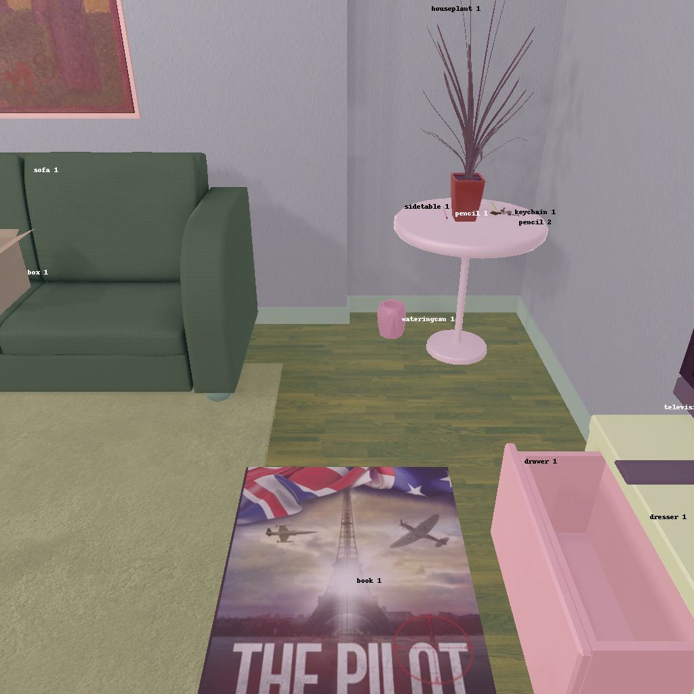

---------------------------------------------------------task: 5---------------------------------------------------------
--------------------------------------------------------------------------------------------------------------------------------------------------------------------
--------------------------------------------------------------------------------------------------------------------------------------------------------------------
Step:--------------------------------------------------------------------------10-------------------------------------------------------------------------------
----------------------------------------
VLM Prompt:
Image1:
Image2:
Image3:
**Instruction**
1. Analyze the provided image to identify all visible household objects, focusing on those relevant to the task description "put some book on armchair."
2. Use the analysis of the image and the task hint "The agent must find an object of the desired type, pick it up, find the correct location to place it, and put it down there." to answer the question: what is the most reasonable action in the choices for the task description "put some book on armchair"?
4. Decide and write the answer using the template: The answer is: (i): , where i is the real number. If there is no desired object in the image, search every place based on **Initial Observation** to find the object. And if no one is exactly correct, choose a similar answer.
**Initial Observation**
You are in the middle of a room. Looking quickly around you, you can see armchair (1), sofa (1), coffeetable (1), drawer (1-4), sidetable (1-3), dresser (1)
**Answer Choices**
(1): go to sofa 1
(2): go to coffeetable 1
(3): go to drawer 1
(4): go to sidetable 1
(5): go to dresser 1
(6): go to drawer 2
(7): go to drawer 3
(8): go to drawer 4
(9): go to sidetable 2
(10): go to sidetable 3
(11): put book 1 in/on armchair 1
(12): use floorlamp 1
(13): examine armchair 1
**Answer**
Let's think step by step by following the instructions.
----------------------------------------
----------------------------------------
Original Response:
Firstly, we need to identify if there is a book visible in the images provided. In Image1 and Image2, we can see "book 1" on the floor, which is relevant to our task "put some book on armchair."
The next step, based on the task hint, is to find the correct location to place the book. Since we already see "armchair 1" in Image3 and we have found "book 1" in Image1 and Image2, we know where the book needs to be placed.
Therefore, the most reasonable action from the choices given for the task description "put some book on armchair" is to pick up the book and place it on the armchair.
The answer is: (11): put book 1 in/on armchair 1.
----------------------------------------
----------------------------------------
>>> Refine Original VLM Response and Get Pure Action: put book 1 in/on armchair 1
----------------------------------------
-----------------------------------------------------------------
Running time: 9.659821271896362 seconds
Total Money: 2.7096799999999996
-----------------------------------------------------------------
-----------------------------------------------------------------
Text Observation:Nothing happens.
-----------------------------------------------------------------
UNSUCCEED